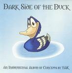

| Artist: | Yak |
| Title: | Dark Side Of The Duck |
| Label: | self produced |
| Length(s): | 32 minutes |
| Year(s) of release: | 2004 |
| Month of review: | [10/2005] |
| 1) | Theme | 2.16 |
| 2) | Aragorn | 5.18 |
| 3) | Leylines Of Yak | 4.34 |
| 4) | Yakrise | 5.49 |
| 5) | Frustration | 4.36 |
| 6) | Migration | 3.13 |
| 7) | Earthogrub | 3.09 |
| 8) | The Swan | 3.21 |
Aragorn continues the line but more song like: the atmosphere is one of peace and quiet, the melodic material is good. It is a combination of piano and fluent synths that may remind some of Tony Banks in their feel. The drums also set in, programmed drums I presume, but that they are programmed is not really a problem here (they often are). Still, this reminds me less of progressive rock than of the melodic side of Tangerine Dream in the eighties. Thematic and melodiwise everything is fine, but the music is a bit static when played in this way.
Leylines Of Yak means a bit more beat and groove to the music. However, the single instrument has its limitations when it comes to this kind of music. It easily waters down to muzak. Also, the music is more meander style here, which does not help.
Yakrise shows a ressemblance to Camel in their Snowgoose period. Frustration moves to more jazzrockish things with the drum programming becoming a bit more complicated. The die down, and the resurgence of music halfwya works well, it reminds me a bit of the ending of Subterranea's first disc. When the music stays melodic and does not try to rock or groove things are quite okay. But when the musuc starts to meander, there is no groove to support it. And that melody at the end here for instance, is a real beauty.
Migration is a bit in the vein of the do-it-yourself American proggers, who can compose, but often turn up with something that lacks that necessary spark of life.
Earthogrub opens very much in ELPish style, or After Crying if you like. This is one of the better openings, very symphonic, and well in line with the possibilities of the player. Then the beat sets in a bit more, repetitively. The main reference point is Camel, at their most laidback.
The Swan is the closer of slightly over half and hour of Yak. This is EM again, and I wish Yak would have stuck to that instead. The feeling is one of melancholy.